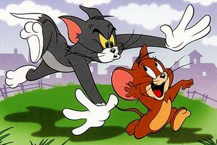

Sejarah Tom and Jerry
Tom and Jerry adalah sebuah serial animasi Amerika Serikat hasil produksi MGM yang bercerita tentang seekor kucing (Tom) dan seekor tikus (Jerry) yang selalu bertengkar. Seri animasi ini telah memenagkan penghargaan Academy Award (Piala Oscar) dan membentuk dasar dari seri sukses studio Metro-Goldwyn-Mayer (MGM). Cerita pendek mereka ini diciptakan, ditulis dan disutradarai oleh dua orang animator bernama William Hanna dan Joseph Barbera (mereka kemudian terkenal sebagai Hanna-Barbera). Seri animasi ini diproduksi oleh MGM Cartoon Studio di Hollywood pada tahun 1940 hingga 1957 saat unit animasi studio tersebut ditutup. Pada tahun 1960, MGM mempekerjakan Rembrandt Films (pimpinan Gene Deitch) di Eropa Timur untuk memproduksi seri Tom and Jerry ini. Produksi Tom and Jerry kembali ke Hollywood pada tahun 1963, dikerjakan oleh Sib-Tower 12 Productions pimpinan Chuck Jones. Seri produksi ini berlangsung hingga tahun 1967. Tom and Jerry muncul kembali di acara kartun televisi hasil produksi Hanna-Barbera (1975-1977; 1990-1993) dan Filmation Studios (1980-1982). Film animasi pendek produksi MGM karya Hanna dan Barbera dikenal karena telah memenangkan tujuh Academy Award, sama dengan prestasi Silly Symphonies karya Walt Disney. Dua karya ini adalah karya animasi seri yang paling banyak menerima penghargaan.
